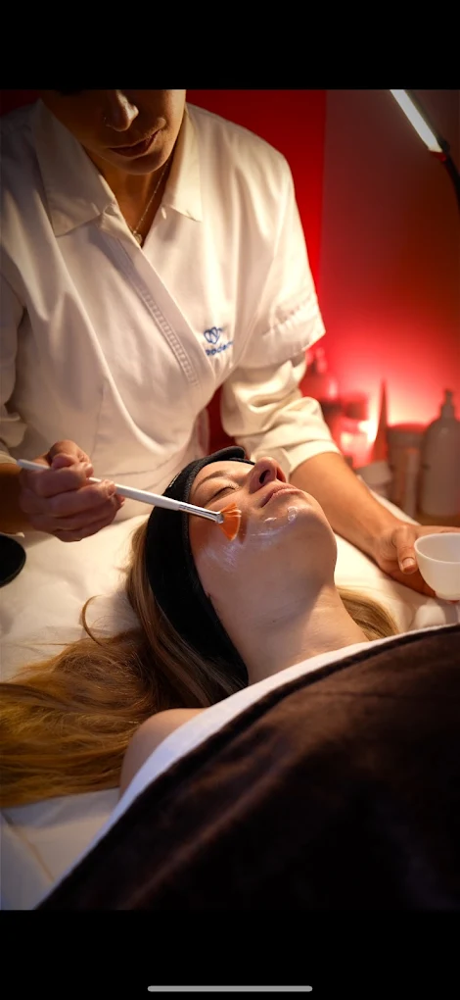
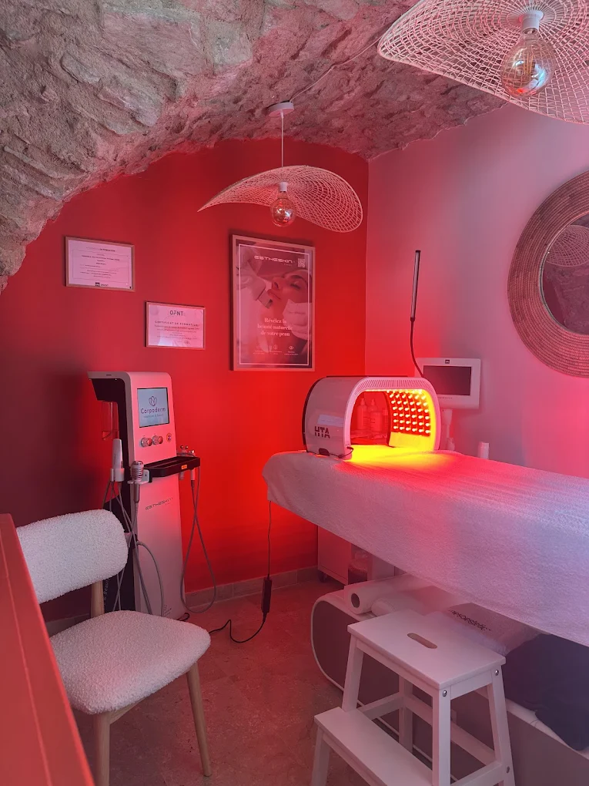
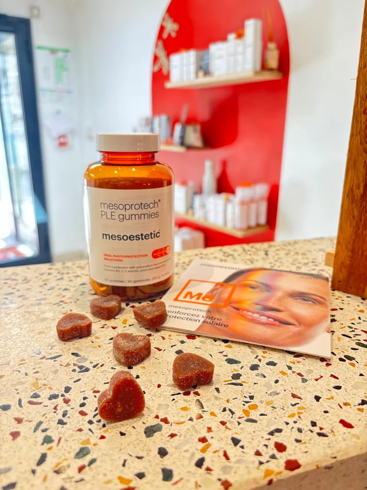
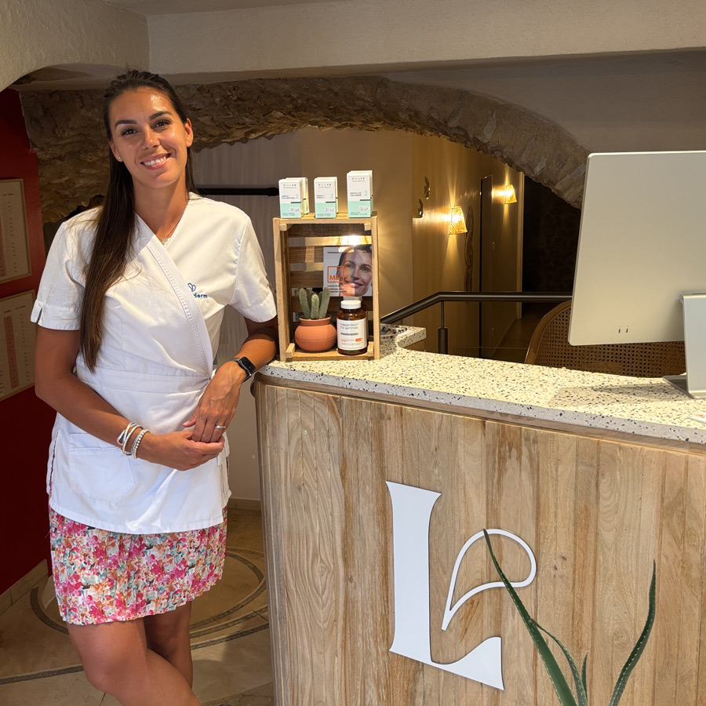

Épilation LASER CE Médical
En finir avec le rasage et la cire. Laser diode adapté à de nombreux types de peau, sur le visage et le corps, pour les femmes comme pour les hommes.
DécouvrirÉpilation laser définitive et soins du visage, réalisés par une infirmière diplômée d'État, dans un cocon au centre de Manosque. Premier bilan personnalisé offert.

Du laser au soin du visage, en passant par la silhouette et le teint, chaque protocole est choisi et réalisé par la même infirmière. Voici nos quatre univers de soin.
En finir avec le rasage et la cire. Laser diode adapté à de nombreux types de peau, sur le visage et le corps, pour les femmes comme pour les hommes.
Découvrir
Soins LUMINEA réalisés avec la machine EsthéSkin et luminothérapie LED, pour nettoyer, hydrater, raffermir et redonner de l'éclat à la peau.
Découvrir
Cellu M6 Alliance pour la minceur, la fermeté et le drainage. Corps et visage, avec un suivi photo de votre progression.
Découvrir
Protocole COSMELAN de Mesoestetic pour atténuer les taches du visage : mélasma, taches solaires, hyperpigmentation.
DécouvrirMargaux est infirmière diplômée d'État. Questionnaire de santé, consentement éclairé, fiche de suivi : la rigueur du soin appliquée à l'esthétique.
Épilation laser, visage, silhouette, teint, cosmétiques : un seul lieu pour prendre soin de vous, sans courir d'un prestataire à l'autre.
La même interlocutrice à chaque séance, un protocole défini ensemble lors du bilan, et un suivi dans le temps. Tout l'inverse d'une chaîne.

Après plusieurs années comme infirmière diplômée d'État, Margaux s'est formée à l'épilation laser, aux soins du visage EsthéSkin et au protocole COSMELAN de Mesoestetic pour ouvrir LUMIA. Son approche : la précision et l'écoute du soin infirmier, au service de votre beauté.
Concrètement, chaque parcours commence par un bilan : on examine votre peau, on répond à vos questions, on définit ensemble un protocole adapté. Puis on avance à votre rythme, séance après séance.
La confiance se construit séance après séance. Retrouvez les avis vérifiés de nos clientes et clients sur Planity.
〔Avis client réel à reprendre depuis Planity ou Google, à valider avec la cliente〕
〔Avis client réel à reprendre depuis Planity ou Google, à valider avec la cliente〕
〔Avis client réel à reprendre depuis Planity ou Google, à valider avec la cliente〕
Oui. Un bilan personnalisé est obligatoire avant la première séance : examen de la peau et du poil, questionnaire de santé, présentation du protocole. Il coûte 20 € et il est offert pour tout achat de séance ou de cure.
Tous les soins sont réalisés par Margaux, infirmière diplômée d'État formée à l'épilation laser, aux soins du visage EsthéSkin et au protocole COSMELAN. Vous avez la même interlocutrice à chaque séance.
Nous acceptons la carte bancaire et les espèces. Le paiement en 3 fois sans frais est possible sur les cures.
Stationnement : plusieurs parkings gratuits à proximité immédiate, Dr Joubert (45 min), Monoprix (1h30), La Poste (3h) et Souvenir Français (3h).
La réservation se fait en ligne sur Planity, ou par téléphone aux horaires d'ouverture.
Réservez votre premier rendez-vous à Manosque. Le bilan est offert pour tout achat de séance ou de cure.